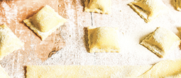

Receta de ravioles veganos

Ravioles veganos

Tiempo de preparación: 55'
Dificultad: Media
Ingredientes
Para la masa:
- 2 tazas de harina de trigo
- 1 cucharadita de cúrcuma en polvo (opcional)
- 4 cucharadas de aceite
- 1 cucharada de sal marina o kala namak
- Cantidad necesaria de de agua fría
- Harina, semolín o polenta para amasar
Para la ricota de girasol:
- 2 tazas de semillas de girasol
- 2 cucharadas de levadura nutricional
- 2 cucharadas de levadura nutricional
sabor queso (opcional)
- 1 cucharada de jugo de limón
- 1 chorrito de vinagre de sidra de manzana
- 2 cucharadas de aceite de oliva
- Sal y pimienta a gusto
Elaboración paso a paso
Para la masa:
- Disponer la harina en un bowl. Añadir la cúrcuma y la sal (o kala namak). Mezclar.
- Agregar el aceite y, de a poco, el agua fría. En paralelo hay que ir integrando los ingredientes y agregando agua hasta formar una masa con la humedad justa, es decir, que no se pegotee en las manos.
- Una vez formada la masa, envolver con film y reservar.
Para el empaste:
- Mezclar la margarina pomada con la harina formando una pasta.
Para la ricota de girasol:
- Remojar las semillas durante al menos 8 horas con agua filtrada. Colar el agua y enjuagar bien.
- Colocar las semillas activadas en un recipiente con el resto de los ingredientes y procesar con minipimer. Debe quedar una consistencia como de paté: una crema rígida para que no humedezca la masa.
Para el armado:
- Dividir la masa en 2 partes y estirar con palote hasta que quede fina.
- Se colocan cucharaditas de la ricota sobre una de las masas con espacio de 1 y 1/2 cm entre sí. Hay que humedecer un poco la masa con los dedos antes de pegar la tapa y presionar bien los bordes para que no se abran, y luego cortar con el cortapasta.
- Dejar descansar los ravioles sobre la mesada con semolín.
- Hervir abundante agua en un recipiente espacioso. Añadir una pizca de sal.
- Colocar los ravioles y retirarlos con espumadera no bien suban a la superficie.
- Servir con la salsa elegida.